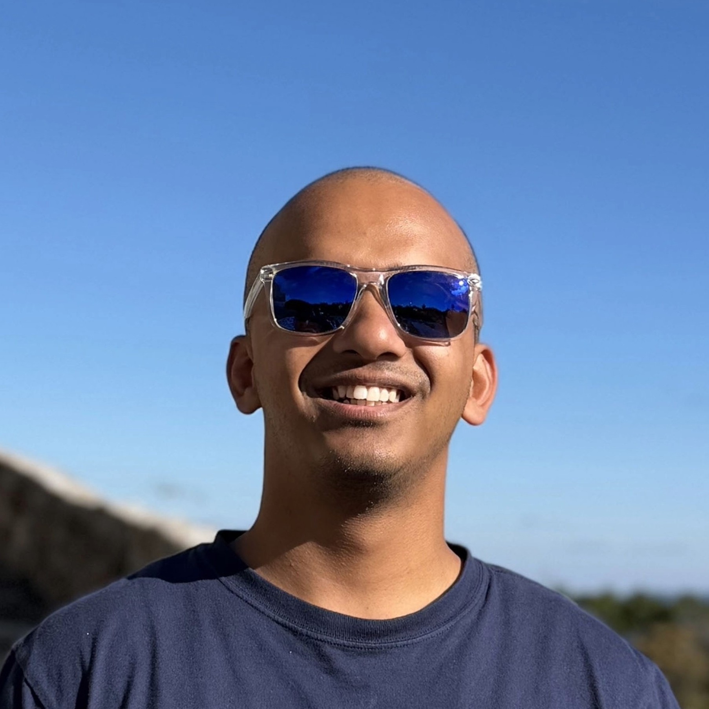

Om Shivam Verma
MS Computer Science @ Georgia Tech
I solve hard technical problems by building and deploying systems with frontier AI.
My goal: Understand complex intelligent systems from first-principles foundations to real-world engineering, and make them work reliably at scale.
I am a Master's student in Computer Science at Georgia Tech, working at the Lunar Lab under Prof. Lu Gan on frontier problems in real-time multi-robot collaboration. My current research focuses on collaborative, open-vocabulary 3D scene understanding using 3D Gaussian Splatting and foundation vision-language models. We presented our latest work, CoGaussian, at the IROS 2026 SeMaNa Workshop 🤖 in Pittsburgh.
Previously, I graduated from Indian Institute of Technology, Kanpur, with a Bachelor of Science in Statistics & Data Science and a minor in Computer Systems. My coursework provided a deep grounding in probability, statistical learning, and big data techniques. My extracurriculars heavily involved robotics and software development. During this time, I worked under Prof. Preeti Malakar in High Performance Computing on identifying and optimizing communication bottlenecks in distributed deep learning that culminated in a short paper at IEEE HiPC 2024 (Student Research Symposium).
Check out my research and experience.
Recent Updates
- Jan 2027 Upcoming Graduate Teaching Assistant for CS 8803: Advanced Mobile Robotics under Prof. Frank Dellaert.
- Oct 2026 Presented CoGaussian at the IROS 2026 SeMaNa Workshop (Pittsburgh, PA).
- Aug 2026 Graduate Teaching Assistant for CS 8803: Deep Reinforcement Learning under Prof. Animesh Garg.
- Aug 2026 Completed AI development internship at Benepower.
- Jan 2026 Joined the Lunar Lab at Georgia Tech under Prof. Lu Gan.
- Aug 2025 Started MS in Computer Science at GeorgiaTech.